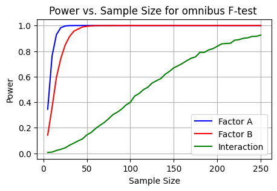
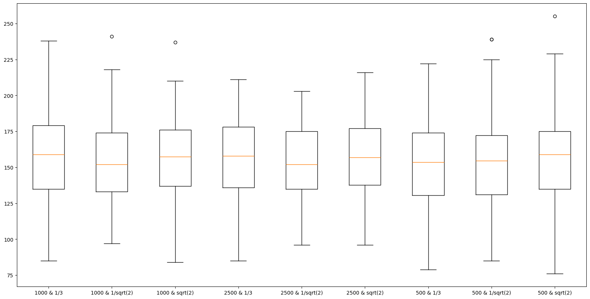
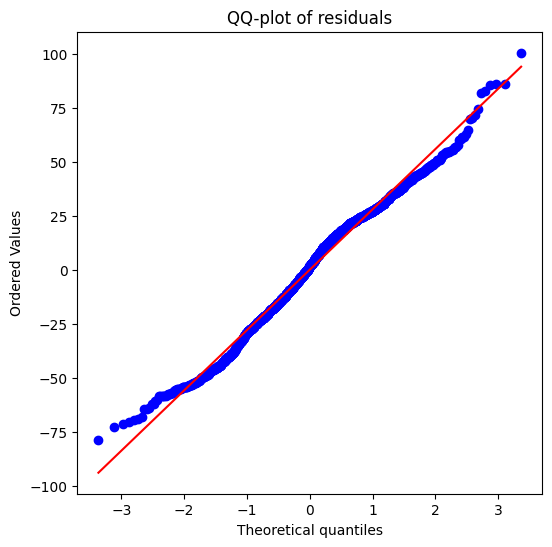

Title
Lightweight MCTS-based autonomous agent for Yahtzee
Abstract
In this technical report, we present the implementation and results of a lightweight Monte Carlo Tree Search (MCTS)-based autonomous agent for the game of Yahtzee, a dice game that involve both luck and strategy. The autonomous agent is designed to run entirely within an internet browser, requiring no backend support, and consistently achieves an average score of \(154\) points. Additionally, we tested various combinations of MCTS hyperparameters and found no statistically significant effect on the game’s score.
Introduction
- Context
Yahtzee is a popular dice game that offer an interesting challenge for reinforcement learning due to its combination of luck and strategy. In this game, the players roll five dice up to three times per turn, with the aim to meet specific scoring categories. The strategic element comes from deciding which dice to keep after roll and which scoring category to fill. This game is characterized as perfect information stochastic game, as all information on game are available to all player at any time.
Reinforcement learning is a subset of machine learning where an agent learns to make decisions by making interactions within an environment. The agent receives rewards by performing actions in specific states of the environment, and its goal is to maximize the total reward over time. This paradigm fits well with many games, including Yahtzee, where each roll represents an action that leads to a new state and potential rewards based on the scoring rules.
- Problem statement
Our goal is to create an autonomous Yahtzee agent that runs in an internet browser without any backend architecture and to evaluate the performance of the MCTS algorithm to determine if it offers a decent challenge for a human opponent.
In addition to this initial objective, we also aim to gain the details of the value of each possible game action for the agent. This will allow a human player to receive real-time assistance from the agent during a game
Methods
Yahtzee as a Markov decision process
Finite Markov decision process is an extension of Markov process that includes an agent that make decisions based on the stochastic process. More formally it is define as set of discrete-time steps and a tuple \(M = (S, A, P, R)\) defined as :
- \(S\) is a finite state space
- \(A\) is the action space such that \(A(s) \subseteq A\) applicable on each state \(s \in S\)
- \(P\) the transition probability matrix which contains all the transition probability \(P(s'|s,a)\) such that for any \(s \in S, s' \in S, a \in A\).
- \(R\) the reward matrix such that \(r(s,a,s')\) return the reward of transitioning from state \(s\) to state \(s'\) using action \(a\)
State space
A state \(s\) must capture all the information necessary to make decisions and calculate scores. We define a state \(s = (D, L, O, B)\) with the following characteristics :
- \(D\), the 5-dice value arrangement, represented by vector of integer
- \(252\) possible values
- \(4\times 5 = 20\) bytes if stored as integer or \(2 \times 5 = 10\) bytes if stored as a short integer
- \(L\), the remaining dice rolls, represented by an integer value \(\in \{3,2,1,0\}\)
- \(4\) possible values
- \(4\) bytes if stored as integer, \(2\) bytes if stored as short integer
- \(O\), the score outcomes realized, represented by a binary vector indicating if the outcome have been realized
- \(2^{13}\) possible values
- \(13\) bytes
- \(B\), the remaining upper score before bonus, represented by a integer value
- \(64\) possible values \([0,1,...,63]\)
- \(4\) bytes if stored as integer, \(2\) if stored as short integer
We can determine the state space size \(|S|\) to be \(252 \times 4 \times 2^{13} \times 64 = 528,482,304\) states.
Assuming optimal data structure, the size of state in memory would be \(2 + 13 + 2 + 10 = 27\) bytes (\(41\) bytes if using integer instead of short integer). The total state space would take \(\approx 14\) GB.
We could reduce the state space size at the cost of losing information about our state by removing \(B\). This would reduce \(|S|\) to \(8,257,536\) and the memory needed to \(\approx 206\) MB.
In previous work, various authors (Glenn, Verhoeff, Pawlewicz) have adopted different strategies to solve the game, which consequently affects the size of the state space and the definition of states or nodesAction space
The set of actions available \(A\) depends on the current state, particularly on the remaining rolls \(R\) and used categories \(C\). Actions can be categorized into two types : dice-rolling actions and scoring actions
Dice rolling action \(A_{roll}\) : At each turn, the player rolls all 5 dices once and then have the possibilities to re-roll any subset of those 5 dices (\(2^5 - 1\) possibilities to exclude the case of rolling \(0\) which would be equivalent to scoring)
Scoring actions \(A_{score}\) : At any point during their turn, the player can choose to score one of available outcomes based on current dice combinations and scores outcomes already realized.
More formally we denote the action space for each state as \[ A(s) = \begin{cases} A_{roll} \cup A_{score}(s) \text{ , if } R >0 \\ A_{score}(s) \ \ \ \ \ \ \ \ \ \ \ \ \text{ , if } R = 0\\ \end{cases} \]\[A_{score}(s) = A_{score} - \{x \in O | x = 1 \}\]We note that the size of the action space is dynamic and will vary across the stages of the game :
- Assuming \(R > 0\) and no realized outcomes \(|\{x \in O | x = 1 \}| = 0\), action space size is \[|A(s)| = 2^5 - 1 + 13 = 44\]
- Assuming \(R > 0\) and 1 realized outcomes \(|\{x \in O | x = 1 \}| = 1\), action space size is \[|A(s)| = 2^5 - 1 + 12 = 43\] This diminution in the action space size pursue until we reach the final state of the game where \(|\{x \in O | x = 1 \}| = 13\)
Action are represented by a boolean indicating the type of action and for rolling actions a vector of 5 boolean that indicate dice to be kept. For scoring action, instead of the vector of boolean, we define an integer that indicate the index of the score outcomes in \(O\)
Total memory size for an action would be \(8\) bytes and given the small size of the action space, the required memory for the action space is negligeable.
Transition probability matrix
The transition probability matrix \(P\) describes the probabilities of moving from any state \(s\) to another state \(s^′\) given an action \(a\)
For dice-rolling actions, these probabilities are determined by the dice roll outcomes which are uniformly distributed among all possible dice combinations. For scoring actions, the transitions are deterministic to a new state with updated \(C\) and \(V\).
Given our state and action spaces, our TPM is a matrix of size \((|S| \times |A|) \times |S|\)
We already start to get a grasp of the potential challenges due the large size of the state-action space. It is more practical to evaluate the transition probability in a “lazy” manner based on a given state-action pair than to precompute the complete TPM.
We define this state transition function \(P(s'|a_{\text{roll}},s)\) below :
- Let \(I_a\subseteq \{0,1,2,3,4 \}\) be the set of indices of dice to reroll for a roll action \(a_{\text{roll}}\)
- We consider all possible outcomes of re-rolling dice in \(I_a\) which corresponds to the Cartesian product \(D^{|I_a|}\) where \(|I_a|\) is the number of dice being rerolled.
- Assuming fair dice and independent roll, the probability of each combination \(d \in D^{|I_a|}\) occurring is \(P(d) = (\frac{1}{6})^{|I_a|}\)
- For each combination \(d\), we construct a new state \(s'(d)\) by replacing values of dice in \(I_a\) with the values in \(d\), sorting the dice values of consistency in state representation
The final transition probability is thus the sum of probabilities \(P(d)\) for \(d\) that lead to \(s'\) from \(s\) under action \(a_{\text{roll}}\) : \[P(s'|a_{\text{roll}}, s) = \sum_{d:s'(d) = s'}P(d)\] For \(a_{\text{score}}\) the transition is deterministic and is defined as \[P(s'|a_{\text{score}},s) = \begin{cases} 1 \text{ if }s'\text{is the resultant state from scoring action } a \text{ in state } s \\ 0 \text{ otherwise} \end{cases}\]
We notice that the state transition function verify the Markov property as the probability of being in state \(s'\) depends only on the previous state \(s\) and the action \(a\) and not on the history of previous states.
Reward function
The reward function \(R(s, a, s')\) represents the score gained when transitioning from state \(s\) to \(s'\) via action \(a\). It is \(0\) for all transitions except those involving scoring actions, where it equals the score of the category chosen, according to the rules of Yahtzee.
We also define \(R_T(s)\) as the final reward function for state \(s\) at the end of the game. This function check if the condition for bonus are met and adds the bonus to the player’s total score : \[R_T(s) = \begin{cases} 35 \text{ if upper\_section\_score(s) } \geq 63 \\ 0 \text{ otherwise } \end{cases}\]Where \(\text{upper\_section\_score(s)}\) calculate the total score from the upper section outcomes in state \(s\).
Note : In our implementation of the Yahtzee game, we have not included the rule known as Yathzee bonus.Horizon
The game of Yahtzee stops once each player has filled the 13 possible outcomes, considering 4 possible values for \(L\) we have a finite horizon \(T=52\).
MCTS algorithm
Monte Carlo Tree Search (MCTS) is a model-free, online planning method. The algorithm explores the decision space by building a search tree in a sequential manner. MCTS involve four phases in its execution, that are repeated until the computational budget is exhausted. The state-action space and the transition probability matrix are represented under the form of a graph.
- Selection
Starting from the root node, which is the current state of the MDP, the algorithm select child nodes in the tree until a leaf node is reached. The child selection is performed according to a selection policy. In our case we use the well-known UCT selection policy \[\arg \max_{a \in A(s)}\bigg(\bar{X}(s,a) + C_p\sqrt{\frac{log(N(s))}{N(s,a)}}\bigg)\] Where :
- \(\bar{X}(s,a)\) the average reward after taking action \(a\) in state \(s\)
- \(N(s)\) the number of visits to state \(s\)
- \(N(s,a)\) the number of times action \(a\) has been selected from state \(s\)
- \(C\) the exploration parameter (can be adjusted to encourage/discourage exploration)
- Expansion
If the selected node is a non-terminal state and not fully expanded (meaning not all possible actions have been explored), a child node is added to the tree, representing one possible future states \(s'\) resulting from an available action \(a \in A(s)\). We then switch to the child node and repeat the expansion procedure.
- Simulation (rollout)
From the child node, simulate random trajectories using a default policy (in our case, a random action selection policy) until a terminal state is reached.
- Backpropagation
After the simulation is done, the reward obtained is propagated back up the tree to update the nodes and actions involved in the selection and expansion phases.
The updates are made using the following steps for each node visited in the path from the leaf node to the root :
- Increment the visit count \(N(s,a)\) for the action \(a\) taken at state \(s\)
- Update the average reward \(\bar{X}(s,a)\) for the action \(a\) at state \(s\) as follows : \[\bar{X} (s,a) \leftarrow \bar{X}(s,a) + \frac{1}{N(s,a)}\big(r - \bar{X}(s,a)\big)\]
- Action selection
Once we have exhausted our computational budget the simulation stops and we select the action that have the highest value \[\arg \max_{a\in A(s)} \bar{X}(s_0,a)\]
Implementation
The game engine and the Monte Carlo Tree Search (MCTS) algorithm for Yahtzee have been developed in both Python and JavaScript to provide flexibility in deployment and testing. The Python version was used primarily during the research phase, while the JavaScript version was developed later, for integration into the web application.
Both implementations are open-source, the link to the repository containing their respective source code can be found in Appendix.
Both of them are similar in terms of logic and sequence only minor differences due to language-specific features and integration need (i.e.: using web workers for MCTS computation in JS version to avoid blocking the UI). In this section we will discuss mainly of the JavaScript implementation and its integration in the web application while in the Results section describe experiments conducted using the Python version.
Features
The web application have two modes : AI opponent and AI assistant. In AI opponent mode, the player face the AI agent in a game of Yahtzee. In AI assistant mode, the player plays alone but benefits from advices coming from the AI agent.
AI assistant provide the player with information such as:
- The mean state-action value \(\hat{X}(s,a)\)
- The standard error of the mean state-action value
- The sample standard deviation of the state-action values
- The sample size \(n\), corresponding number of time this action has been sampled during MCTS
- An histogram of the expected final score conditioned on the current state \(s\) and the selected action \(a\)
Note : The mean state-action value here is conditioned to following the policy determined by the MCTS algorithm
Results
We aimed to test our agent and identify the optimal set of hyperparameters (exploration constant and number of simulations before making a decision). To account for potential interactions between these two hyperparameters and accommodate the stochastic nature of the game we approached this as a statistical inference problem rather than a stochastic optimization problem. (I must admit, a personal bias might have influenced this choice, as I was eager to practice my experimental design skills.)
We collected samples of scores from agent with different combinations of the hyperparameters (\(C \in [1/3, 1/\sqrt{2}, \sqrt{2}]\) and \(sim \in [500,2500,5000]\)) and performed a two-way ANOVA analysis to test the effect of both factors and potential interactions between them.
Surprisingly, the results shows an absence of statistical significance by far for both the number of simulations (\(\text{p-value} \approx 0.39\)) and the exploration constant \((\text{p-value} \approx 0.97)\). Interaction between factors is also very unlikely (\(\text{p-value} \approx 0.84\)).
Discussion
Given the results of the statistical analysis, we can conclude that the different value of the hyperparameters tested don’t impact the agent performance in a significant manner. While this outcome is not very surprising for the exploration constant, the fact that increasing the number of simulations by a factor of 5 does not improve the agent’s performance is quite concerning. Intuition would suggest that the performance of MCTS should increase with the number of simulations, but our empirical evidence suggests otherwise. This question could be further explored as a stochastic optimization problem, as mentioned in the results section, and might be the focus of future work.
In terms of the goals of the project, being to have a lightweight autonomous Yahtzee agent capable of offering decent challenge and assistance to a human player, the results are also mitigated. While we have indeed succeeded in the implementation, the resulting average score of \(154\) might be challenge for some player, it is far from the result of the optimal strategy for Yahtzee defined in previous work about this game. If we seek to improve the results, we could explore different approach.
A clear approach would be to follow the methods described by previous authors and pre-compute parts of the state space values, storing them for use at runtime. Other potential avenues could include using Q-function approximation to enhance or even replace the MCTS algorithm for our agent.
References
Yahtzee optimal strategy
- A Nearly Optimal Computer Player in Multi-player Yahtzee, Jakub Pawlewicz
- An optimal strategy for Yahtzee, James Glenn
- Optimal solitaire Yahtzee strategies, Tom Verhoeff
Monte Carlo Tree Search
- Monte-Carlo Tree Search for General Game Playing, Jean Mehat and Tristan Cazenave
- Improved Monte-Carlo Search, Levente Kocsis, Csaba Szepesv´ari, Jan Willemson
Reinforcement Learning
- This online ebook, Tim Miller
- Reinforcement Learning and Optimal Control, Dimitri P. Bertsekas
Statistical analysis
- Experimental Design and Analysis, Howard J. Seltman
- Statistical Design and Analysis of Biological Experiments, Hans-Michael Kaltenbach
Appendix
1. Experimental design
Dependent variable \(Y_{i,j,k}\) : Total score achieved in a game for factor \(\tau_j\) with \(J\) levels and factor \(a_k\) with \(K\) levels and \(i\) indexes the observations in the corresponding group.
Independent variables :
- Factor \(\tau\) : Number of simulations with four levels \(j \in \{1,2,3,4\}\)
- \(j=1\) : MCTS with 500 simulations
- \(j=2\) : MCTS with 1000 simulations
- \(j=3\) : MCTS with 2500 simulations
- Factor \(a\) : Value of the exploration constants \(C_p\) with four levels \(k \in \{1,2,3,4\}\)
- \(k=1\) : Exploration constant \(C_p = 1/3\)
- \(k=2\) : Exploration constant \(C_p = 1/\sqrt{2}\)
- \(k=3\) : Exploration constant \(C_p = \sqrt{2}\)
As we want to study main effects but also the potential interactions between the factors levels, we use a full factorial design resulting in \(9\) distinct groups with \(n\) observations per group.
Hypothesis :
- Main effects
- \(H_{0A}\) : All simulation numbers have identical mean score
- \(H_{0B}\) : All exploration constants levels have identical mean score
- Interaction effects
- \(H_{0A:B}\) : There is no interaction between strategy
We have also defined contrasts to test more specific hypothesis about differences between each groups but given the results of the F-test, they have not been conducted and are not included in the report.
2. Power analysis
Assuming that the minimum of difference between groups is as follows, for \(i\) the index of the factor number of simulations and the \(j\) the index of the factor exploration constant
- \(Y_{.,1,1} = 150\)
- \(Y_{.,1,2} = 145\)
- \(Y_{.,1,3} = 142.5\)
- \(Y_{.,2,1} = 165\)
- \(Y_{.,2,2} = 155\)
- \(Y_{.,2,3} = 145\)
- \(Y_{.,3,1} = 185\)
- \(Y_{.,3,2} = 170\)
- \(Y_{.,3,3} = 160\)
And a sample variance of \(930\) (from observations of the agent scores during development), we reach a power of \(0.8\) around \(n=30\) for the main effects. For interactions as the effect size is smaller, it require to increase up to \(n=170\) to reach the desired power. We take a small margin of security and define \(n = 200\) for this experiment.

3. Box plot of the groups

4. Descriptive statistics
\[\begin{array}{lccc} \textbf{Statistic} & \textbf{Score} & \\ \hline \text{Count} & 1800 \\ \text{Mean} & 154.300556 \\ \text{Std} & 28.073401 \\ \text{Min} & 76 \\ \text{25\%} & 135 \\ \text{50\%} & 156 \\ \text{75\%} & 176 \\ \text{Max} & 255\\ \end{array}\]
5. ANOVA F-test table
\[\begin{array}{lcccc} \textbf{} & \textbf{SS} & \textbf{F-statistic} & \textbf{p-value} & \textbf{df} \\ \hline \text{Factor A} & 1491.87 & 0.944 & 0.389 & 2 \\ \text{Factor B} & 53.34 & 0.034 & 0.967 & 2 \\ \text{Interactions} & 1135.26 & 0.359 & 0.838 & 4 \\ \text{Residuals} & 1415139.93 & - & - & 1791 \\ \text{Reduced Model} & - & 0.359 & 0.838 & 1795 \\ \end{array}\]
6. Levene’s test for equality of variances
\[\begin{array}{l|c} \text{F-statistic} & 1.101 \\ \text{SS between} & 2119.66 \\ \text{SS within} & 431178.60 \\ \text{p-value} & 0.360 \\ \text{df between} & 8 \\ \text{df within} & 1791 \\ \end{array}\]
7. QQ-plots of residuals
